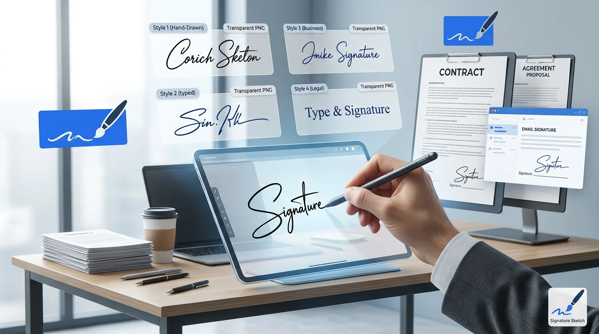

Your signature represents you on every contract, proposal, and email you send. A sloppy or generic-looking signature undermines your credibility before anyone reads a word. Here is how to create a professional signature that looks polished, authentic, and ready for business.
Key Takeaways
A professional signature balances legibility and personality. It should be recognizable without being overly decorative.
Always save as transparent PNG. This ensures your signature sits cleanly on contracts, PDFs, and letterheads.
You can create one in under 60 seconds using a free online generator 鈥?no design skills needed.

What Makes a Signature Look Professional?
Not every signature needs to be a work of art. In fact, the most professional signatures share a few simple traits:
- Partial legibility. People should be able to guess your name (or at least the first letter). A completely illegible scrawl looks careless in a business context.
- Consistent stroke weight. Avoid mixing thick and thin lines randomly. A steady pen pressure signals confidence.
- Moderate size. Your signature should fit comfortably in a standard signature line without being too small to read or too large to look proportional.
- Clean background. A transparent PNG is essential. White boxes behind signatures on contracts look amateurish.
- Appropriate color. Black is the universal standard. Dark blue is preferred for legal documents because it distinguishes originals from photocopies.
💡 The 3-Second Rule
If someone glances at your signature for 3 seconds, they should get a sense of who signed it. That is the sweet spot between "too messy" and "too perfect." Overly neat signatures look typed. Overly messy ones look rushed.
Drawing vs Typing: Which Is More Professional?
Online signature generators typically offer two modes: draw your signature freehand, or type your name and pick a font. Both produce valid results, but they serve different purposes.
| Factor | Drawn Signature | Typed Signature |
|---|---|---|
| Authenticity | High 鈥?unique to you | Medium 鈥?font is shared |
| Consistency | Varies each time | Identical every time |
| Best for | Contracts, legal docs, NDAs | Emails, internal memos, invoices |
| Perceived authority | Stronger | Adequate |
| Ease of creation | Requires touchscreen or mouse | Just type and choose font |
For external-facing documents (client contracts, proposals, partnership agreements), a drawn signature carries more weight. For internal documents and routine correspondence, a typed cursive signature works fine.
How to Create a Professional Signature (Step by Step)
You do not need Photoshop, a scanner, or a graphic designer. A browser-based signature generator handles everything in under a minute.
Method 1: Draw It
- Open Signature Sketch in any browser (desktop or mobile).
- Select "Draw" mode. Choose black or dark blue ink. Set stroke width to 2-3px for a clean, professional look.
- Sign naturally. Use your mouse, trackpad, or finger on a touchscreen. Do not try to be perfect 鈥?slight imperfections make it look authentic.
- Preview and adjust. If it looks too shaky, clear and try again. Speed helps 鈥?sign faster rather than slower.
- Download as PNG. The transparent background means it works on any document without a white box.
Method 2: Type It
- Open Signature Sketch and select "Type" mode.
- Enter your name. Use your full name or just your first and last initials 鈥?whatever matches your signing style.
- Browse fonts. Choose a script or handwriting font that looks natural. Avoid overly decorative fonts for business use.
- Adjust size and color. Black is safest. Keep the size proportional to a standard signature line.
- Download as PNG. Same transparent output, ready for any document.
📱 Pro Tip: Use Your Phone
Drawing on a touchscreen produces the most natural-looking signature. Your finger moves the same way a pen does on paper. Open Signature Sketch on your phone, draw your signature, and download the PNG. Then send it to your computer or use it directly from your phone.
Where to Use Your Professional Signature
Once you have your transparent PNG, you can reuse it across every business document:
- Contracts and NDAs: Insert into Word or Google Docs before sending. Word tutorial | Google Docs tutorial
- PDF agreements: Use any PDF reader's "Add Image" feature. Full PDF signing guide
- Business emails: Add to your email signature in Gmail, Outlook, or Apple Mail for a personal touch.
- Invoices and proposals: Drop into your invoice template. A signed invoice looks more authoritative than an unsigned one.
- Company letterheads: Place your signature in the closing section of official letters.
- Digital forms: Any platform that accepts image uploads can use your PNG signature.
5 Design Principles for Business Signatures
Whether you draw or type, these principles separate amateur signatures from professional ones:
1. Keep it simple
Excessive loops, underlines, and decorative elements make a signature look like a teenager's notebook doodle. The most respected signatures in business are surprisingly simple. Think of how CEOs sign 鈥?usually just a stylized version of their initials or name.
2. Use consistent ink color
Pick one color and stick with it across all documents. Black works everywhere. Blue ink is traditional for legal documents. Never use red, green, or other colors for business signatures.
3. Size matters
Your signature should be roughly 1.5 to 2 inches wide and 0.5 to 0.75 inches tall. Too small and it looks timid. Too large and it looks like you are overcompensating. Most signature generators let you resize before downloading.
4. Transparent background is non-negotiable
A white box behind your signature on a contract screams "I pasted this from Paint." Always use PNG format with a transparent background. This ensures your signature overlays text lines and colored backgrounds cleanly.
5. Practice before you commit
If you are drawing your signature, do 5-10 practice runs before saving the final version. Your first attempt is rarely your best. Most online tools let you clear and redraw instantly, so there is no cost to practicing.
Is a Generated Signature Legally Valid?
Yes. In most countries, electronic signatures carry the same legal weight as handwritten ones for standard business transactions.
- United States: The ESIGN Act (2000) and UETA make electronic signatures legally binding for contracts, agreements, and most business documents.
- European Union: The eIDAS regulation recognizes electronic signatures. Simple electronic signatures (like those from a generator) are valid for most commercial purposes.
- United Kingdom: The Electronic Communications Act 2000 accepts electronic signatures for most contracts.
- Canada, Australia, India: All have equivalent legislation recognizing electronic signatures.
The exceptions are narrow: real estate deeds, wills, and certain government filings may still require wet ink in some jurisdictions. For everyday business documents 鈥?contracts, NDAs, invoices, proposals, employment agreements 鈥?a generated signature is fully valid.
Common Mistakes to Avoid
Using a generic typed name
Typing "John Smith" in Arial is not a signature. It is just text. If you type your signature, use a handwriting or script font that looks like actual penmanship. Better yet, draw it.
Saving as JPG
JPG does not support transparency. Your signature will have a white rectangle behind it that covers text and lines in your documents. Always export as PNG. Learn why transparency matters.
Making it too complex
A signature with 15 loops and 3 underlines does not look more professional. It looks harder to verify and easier to forge. Simplicity signals confidence.
Using a different signature for every document
Consistency builds trust. Create one signature you are happy with, save the PNG, and reuse it everywhere. Changing your signature frequently raises questions about authenticity.
Ignoring mobile
Many professionals need to sign documents on the go. Make sure your signature PNG is saved somewhere accessible 鈥?cloud storage, email drafts, or your phone's photo library. You can also create signatures directly on your phone.
Privacy and Security
Your signature is sensitive personal data. Before using any online generator, check how it handles your information.
- Client-side processing: The best tools (like Signature Sketch) process everything in your browser. Your signature data never leaves your device.
- No account required: If a tool forces you to create an account to download your signature, your data is being stored on their servers.
- No upload: If the tool works offline or without an internet connection, your signature stays local. If it requires a server round-trip, your data is being transmitted.
🔒 How Signature Sketch Handles Privacy
Signature Sketch runs entirely in your browser using HTML5 Canvas. No signature data is uploaded to any server. No account is needed. No cookies track your signature activity. Your signature stays on your device from creation to download.
Professional Signature Tools Compared
| Tool | Free | Transparent PNG | No Sign-up | Client-side |
|---|---|---|---|---|
| Signature Sketch | ✅ | ✅ | ✅ | ✅ |
| DocuSign | ❌ (paid plans) | ❌ | ❌ | ❌ |
| Adobe Sign | ❌ (paid plans) | ❌ | ❌ | ❌ |
| HelloSign | Limited free | ❌ | ❌ | ❌ |
| Canva | ✅ | ❌ (Pro only) | ❌ | ❌ |
Most enterprise signing platforms (DocuSign, Adobe Sign) are designed for document workflow management, not signature creation. They are overkill if you just need a clean signature image. A dedicated signature generator is faster and simpler for creating the signature itself.
Frequently Asked Questions
What makes a signature look professional?
A professional signature is partially legible, uses consistent stroke weight, avoids excessive decoration, and is saved with a transparent background. Black or dark blue ink is standard for business use.
Is a generated signature legally valid?
Yes. Under the ESIGN Act (US), eIDAS (EU), and equivalent laws worldwide, electronic signatures are legally binding for most business documents including contracts, NDAs, invoices, and employment agreements.
Can I use a professional signature generator for free?
Yes. Signature Sketch is 100% free with no watermark, no sign-up, and no usage limits. You can create unlimited professional signatures and download them as transparent PNGs.
Should I draw or type my professional signature?
For maximum authenticity, draw it. A hand-drawn signature looks personal and unique. If your handwriting is inconsistent, typing with a professional script font is a solid alternative that still looks polished.
What file format should I save my professional signature in?
Always save as PNG with a transparent background. JPG adds a white box behind your signature that covers text in documents. PNG preserves transparency so your signature sits cleanly on any background.
How do I add my signature to a business email?
Download your signature as a transparent PNG, then add it to your email client's signature settings. In Gmail: Settings > See all settings > Signature > Insert Image. In Outlook: File > Options > Mail > Signatures. Full email signature guide.
Create Your Professional Signature
Free. No sign-up. Works in your browser. Download a transparent PNG in seconds.
Open Signature Sketch